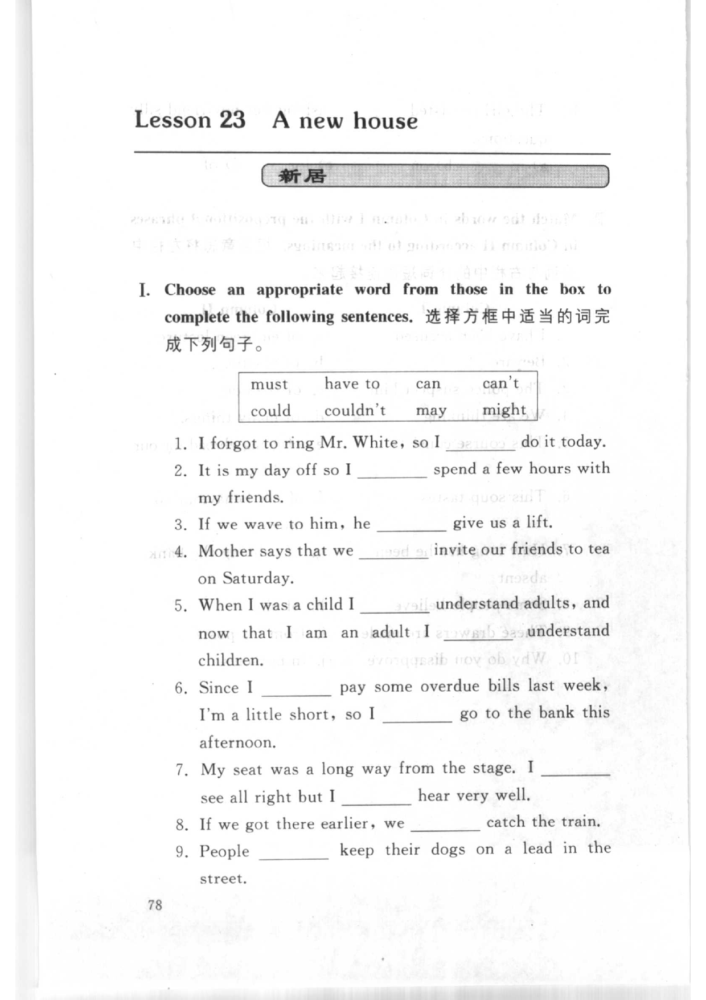
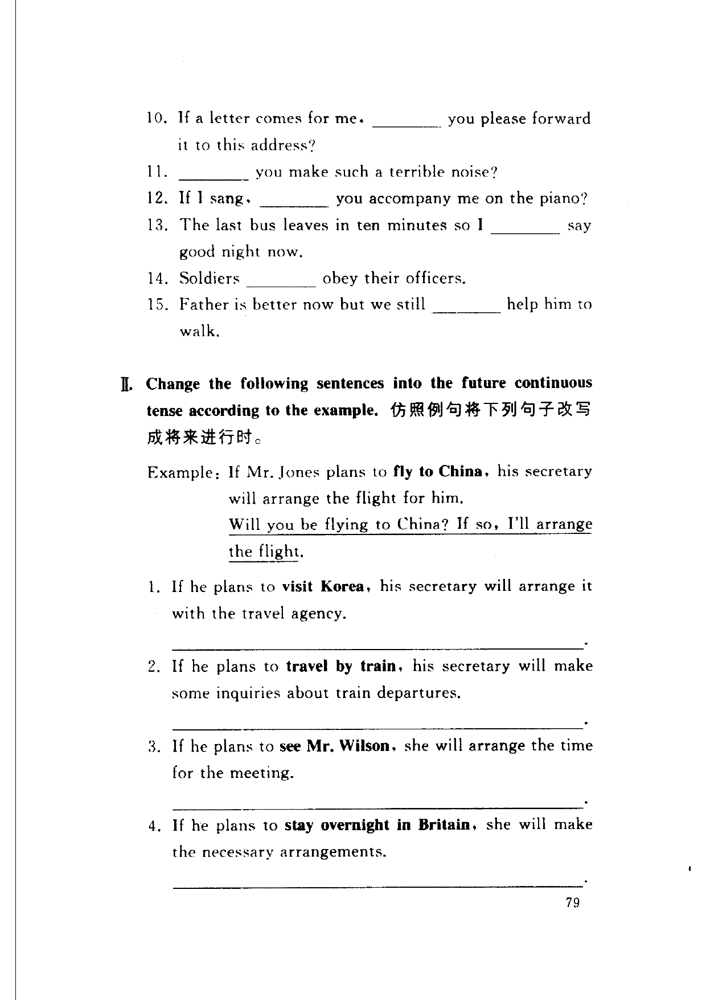
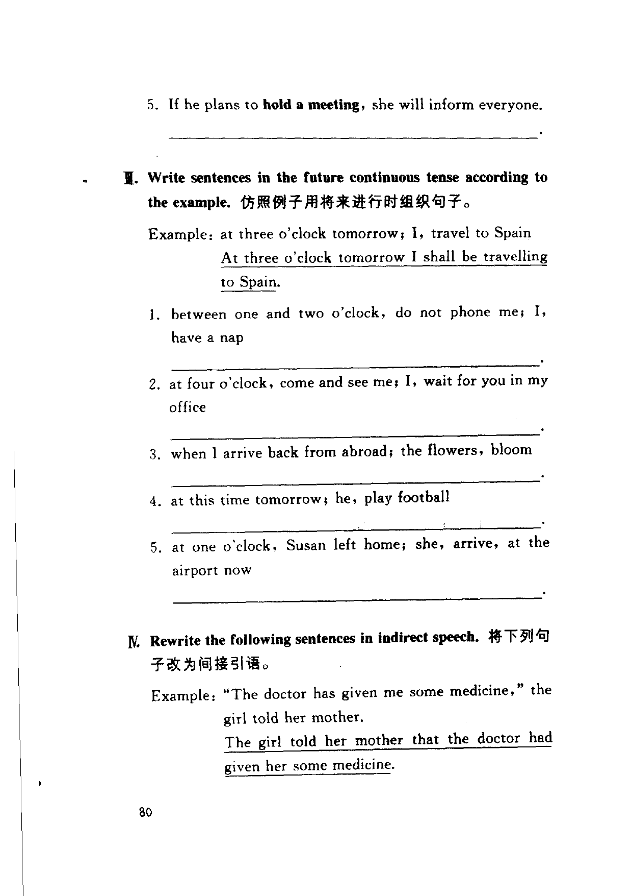
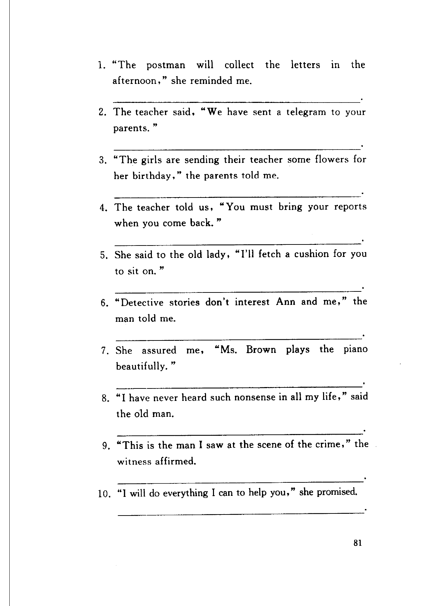

Grammar exercises · 语法练习
I. Choose an appropriate word from those in the box to complete the following sentences.
选择方框中适当的词完成下列句子。
must · have to · can · can't · could · couldn't · may · might
-
I. Modals — I forgot to ring Mr. White, so I do it today.
-
I. Modals — It is my day off so I spend a few hours with my friends.
-
I. Modals — If we wave to him, he give us a lift.
-
I. Modals — Mother says that we invite our friends to tea on Saturday.
-
I. Modals — When I was a child I understand adults, and now that I am an adult I understand children.
-
I. Modals — Since I pay some overdue bills last week, I'm a little short, so I go to the bank this afternoon.
-
I. Modals — My seat was a long way from the stage. I see all right but I hear very well.
-
I. Modals — If we got there earlier, we catch the train.
-
I. Modals — People keep their dogs on a lead in the street.
-
I. Modals — If a letter comes for me, you please forward it to this address?
-
I. Modals — you make such a terrible noise?
-
I. Modals — If I sang, you accompany me on the piano?
-
I. Modals — The last bus leaves in ten minutes so I say good night now.
-
I. Modals — Soldiers obey their officers.
-
I. Modals — Father is better now but we still help him to walk.
II. Change the following sentences into the future continuous tense according to the example.
仿照例句将下列句子改写成将来进行时。
Example: If Mr. Jones plans to fly to China, his secretary will arrange the flight for him.
Will you be flying to China? If so, I'll arrange the flight.
-
II. Future continuous — If he plans to visit Korea, his secretary will arrange it with the travel agency.
-
II. Future continuous — If he plans to travel by train, his secretary will make some inquiries about train departures.
-
II. Future continuous — If he plans to see Mr. Wilson, she will arrange the time for the meeting.
-
II. Future continuous — If he plans to stay overnight in Britain, she will make the necessary arrangements.
-
II. Future continuous — If he plans to hold a meeting, she will inform everyone.
III. Write sentences in the future continuous tense according to the example.
仿照例子用将来进行时组织句子。
Example: at three o'clock tomorrow; I, travel to Spain
At three o'clock tomorrow I shall be travelling to Spain.
-
III. Future continuous — between one and two o'clock, do not phone me; I, have a nap
-
III. Future continuous — at four o'clock, come and see me; I, wait for you in my office
-
III. Future continuous — when I arrive back from abroad; the flowers, bloom
-
III. Future continuous — at this time tomorrow; he, play football
-
III. Future continuous — at one o'clock, Susan left home; she, arrive, at the airport now
IV. Rewrite the following sentences in indirect speech.
将下列句子改为间接引语。
Example: "The doctor has given me some medicine," the girl told her mother.
The girl told her mother that the doctor had given her some medicine.
-
IV. Indirect speech — "The postman will collect the letters in the afternoon," she reminded me.
-
IV. Indirect speech — The teacher said, "We have sent a telegram to your parents."
-
IV. Indirect speech — "The girls are sending their teacher some flowers for her birthday," the parents told me.
-
IV. Indirect speech — The teacher told us, "You must bring your reports when you come back."
-
IV. Indirect speech — She said to the old lady, "I'll fetch a cushion for you to sit on."
-
IV. Indirect speech — "Detective stories don't interest Ann and me," the man told me.
-
IV. Indirect speech — She assured me, "Ms. Brown plays the piano beautifully."
-
IV. Indirect speech — "I have never heard such nonsense in all my life," said the old man.
-
IV. Indirect speech — "This is the man I saw at the scene of the crime," the witness affirmed.
-
IV. Indirect speech — "I will do everything I can to help you," she promised.
Original images · 原图对照
Expand a page to compare it with the transcription. Open the original in a new tab to zoom in.
展开原图核对文字，也可以在新标签页打开原图放大查看。
Book page 1 · Exercise I (modals, items 1–9)
Open original · 打开原图 ↗ Download original · 下载原图


Book page 2 · Exercise I (items 10–15) and Exercise II (future continuous, items 1–4)
Open original · 打开原图 ↗ Download original · 下载原图


Book page 3 · Exercise II (item 5), Exercise III (future continuous, items 1–5), and Exercise IV (indirect speech, example)
Open original · 打开原图 ↗ Download original · 下载原图


Book page 4 · Exercise IV (indirect speech, items 1–10)
Open original · 打开原图 ↗ Download original · 下载原图


Your notes and answers
Use this space for longer responses or exercises that do not have an individual answer box.